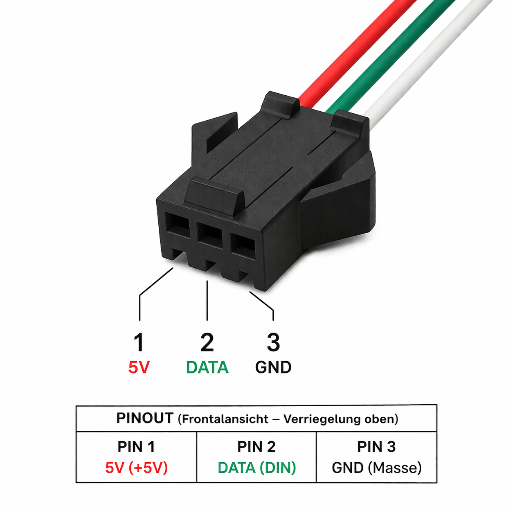

WsMax
preliminary datasheet
product type
- two-piece inline WS281x data extender
- differential transport over 3-pin XLR DMX cable
- designed for longer and more robust WS281x links
system architecture
WsMax consists of two dedicated units:
- transmitter unit
- receiver unit
The transmitter converts WS281x single-ended data to a differential signal. The receiver converts the differential signal back to WS281x data.
signal transport
- transport principle: RS-485-style differential signaling
- cable type: DMX-grade twisted pair, nominal 120 ohm
- link connector type: 3-pin XLR
- line termination: 120 ohm at transmitter and receiver side
electrical interface
- transceiver class: half-duplex RS-485/RS-422
- transceiver supply range: 4.75 to 5.25 V
- transceiver signaling capability: up to 2.5 Mbit/s
- receiver threshold window: -200 mV to +200 mV
- receiver common-mode range: -7 V to +12 V
- nominal operating voltage: 5 V DC per unit
- data path: unidirectional, controller to strip
- intended signal family: WS281x-style one-wire data
maximum ratings
- supply pin, absolute maximum: -0.3 V to +12 V
- bus pins A/B, absolute maximum: -8 V to +12.5 V
- logic pins, absolute maximum: -0.3 V to VCC +0.3 V
ws2811 payload compatibility
- data format: one-wire NRZ stream
- typical payload: 24 bit per pixel, GRB order, 8 bit per channel
- supported stream rates: 400 kbit/s and 800 kbit/s
connectors
transmitter side:
- JST-SM 3-pin female
- XLR 3-pin male
receiver side:
- JST-SM 3-pin male
- XLR 3-pin female
pin assignment
JST-SM side:
- pin 1: +5 V
- pin 2: DATA
- pin 3: GND
XLR side:
- pin 1: GND or shield reference
- pin 2: DATA-
- pin 3: DATA+
wire color note:
- wire colors on JST pigtails can vary by supplier
- verify pin functions before final installation
pinout reference images:

performance
- designed for long cable runs compared to direct WS281x wiring
- supported link length: up to 1000 m
- achievable range depends on cable quality and installation conditions
- practical link length depends on controller timing, cable quality, grounding, and EMI conditions
- long-run installations should be validated on site before production use
mechanical
- inline adapter format for direct cable integration
- compact assembly intended for field wiring and retrofit use
operating conditions
- indoor dry-use design
- avoid direct moisture, conductive dust, and mechanical over-stress
package contents
- 1x WsMax transmitter unit
- 1x WsMax receiver unit
- quick wiring sheet
notice
Specifications and features may change without prior notice.